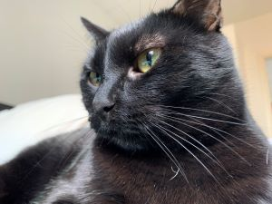

Cat
The cat (Felis catus ) is a domestic species of small carnivorous mammal. It is the only domesticated species in the family Felidae and is commonly referred to as the domestic cat or house cat to distinguish it from the wild members of the family. Cats are commonly kept as house pets but can also be farm cats or feral cats; the feral cat ranges freely and avoids human contact. Domestic cats are valued by humans for companionship and their ability to kill rodents. About 60 cat breeds are recognized by various cat registries.
Hämeen ammattikorkeakoulu HAMK
PL 230
13101 Hämeenlinna